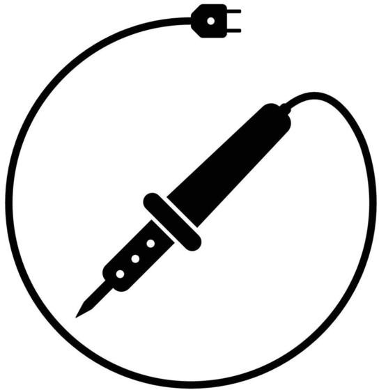
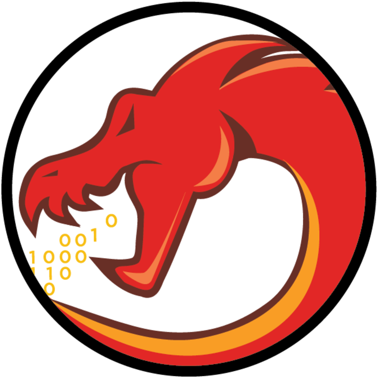

Logan Manthey
Hi, my name is Logan and I'm currently studying Computer Engineering at Rose-Hulman Institute of Technology.
With a strong background in computer engineering, electrical engineering, software engineering, and computer science, I've gained a diverse set of skills through my internships and academic experiences. My passion lies in utilizing embedded systems and firmware to develop and optimize products that prioritize advanced cybersecurity practices. My ultimate goal is to use my expertise in hardware-oriented cybersecurity and product development to make the world a safer and better place.
Resume Download
Education
Masters Engineering Management
2020 - 2025
Rose-Hulman Institute of Technology, Terre Haute, IN
-
Manufacturing Systems, Marketing in New Product Development
Bachelors of Science Computer Engineering
Minor in German and Cyber Security
2020 - 2025
Rose-Hulman Institute of Technology, Terre Haute, IN
-
Advanced Microcomputers (Hardware-Software Codesign),
Advanced Verilog,
Embedded Systems,
High-Speed Digital Design,
Communication Networks,
Computer Architecture I-II,
Operating Systems,
Digital Signal Processing,
Continuous-Time Signals \& Systems,
Electronic Device Modeling,
Practical Security I-III,
Cyber Security Seminar,
German I-VI,
DC and AC Circuits, Circuits and Systems,
Object-Oriented Software Development,
Data Structures and Algorithm Analysis,
Engineering at Nanoscale
- Activities and Honors
- Cyber Security Club Vice President, Treasurer
Rose-Hulman Institute of Technology - Deans List
Rose-Hulman Institute of Technology - Jazz Pianist
Rose-Hulman Institute of Technology - German Student Exchange Program
Summer of 2019 - FIRST Robotics Programming Team Captain
RoboRiot 3418
Professional Experience
Lead Hardware Engineer Intern
June 2023 - Present
Glassboard Product Development, Indianapolis, IN
-
Wrote documentation on standards for Altium Designer practices and created PCB and Schematic templates.
Integrated A365 managed content such as device sheets and design reuse blocks into the company workflow.
Hardware Engineer Intern
June 2022 - Present
Glassboard Product Development, Indianapolis, IN
-
Worked on a team to develop new products from customer specifications; Designed Altium Schematics
and layouts, prototyped and tested PCB assemblies, surface mount soldering, firmware development, wrote
technical documentation, implemented and ran electronic component database for on-hand parts
Electrical Engineering Intern
June 2021 - August 2021
Curt G Joa, Sheboygan Falls, WI
-
Communicated across various teams including electricians, mechanical engineers, and mechanics to develop
industrial automation machinery in the disposable hygiene space; worked with Allen Bradley PLC, Studio
5000 Logix, Logix Emulate, RSlinx, Factory Talk, Codesys, Cognex Machine Vision Insight explorer, and
VMware ESXI for remote HMI systems; troubleshooted electrical panels, setup and tested new devices, and
coordinated with project management and customers
Skills
Hardware
-
 PCB Design
PCB Design - Experienced in Altium Designer 365 and KiCAD. Experience creating managed content such as device sheets, design reuse blocks, sheet templates, and project templates.
- FPGA
- Experienced in Quartus Prime, Model Sim, Xilinux Vivado with Zybo Z7 development boards.
-  Soldering and PCB Rework
- Solder and rework various packaged from 0402s to BGAs.
Software
-
 Linux
Linux - Daily drive Ubuntu on personal machines, ran and managed various linux servers and Hyper-Visors (VMWare ESXI). Use window managers and VIM.
-  Security
- Ghidra Reversing, Kali Linux Tools
- Firmware
- MSP432, TI Code Composer, Zephyr RTOS, Arduino,
Projects and Research
Bitstream Evolution Data Acquisition Board
September 2022 - Present
Rose-Hulman Institute of Technology
This development board is an extension of the evolvable hardware open source project (https://evolvablehardware.org/). It was created to expand and bring new features to the evolvable hardware ecosystem while still maintaining it’s accessibility.RSA Hardware Accelerator
May 2023
Rose-Hulman Institute of Technology
Used hardware-software co-design on Xilinx Vivado to speed up RSA encryption and decryptionEmbedded System Projects
December 2021 - March 2022
Rose-Hulman Institute of Technology
- Camera Controlled Car
- - Programmed an MSP432 to control a car with movement recognized by a camera
- Sensor Terminal
- - Relayed values from an I2C gyroscope to a parallel LCD screen with settings adjustment from a UART terminal
- Piezo Buzzer Music Driver
- - Used timers and interrupts to generate a PWM signal for a piezo buzzer; playback was controlled using hardware interrupts on buttons
- Stepper Motor Driver
- - Built a Stepper motor driver that also generated a PWM signal using timers to control a servo motor speed gauge
RISC-V ROP Gadget Finder
February 2023
Rose-Hulman Institute of Technology
Worked in a team to create python scripts to find gadgets from RISC-V binaries to exploit return orientated programming.Reduced Instruction Set Processor
September 2022 - November 2022
Rose-Hulman Institute of Technology
Utilized Model-Sim and Quartus Prime to design and implement both a custom multi-accumulator and load store reduced instruction set processor in Verilog with supporting documentation in LaTeXSolar Cell Creation
March 2022 - May 2022
Rose-Hulman Instutie of Technology
An examination of solar cell production through techniques such as such as RCA clean, Doping, Photo-lithography and Sputtering. with a comparison to higher efficiency cells. This process produced solar cells with a maximum of power output of 160 µW per cell under ideal lighting conditions and a 1 kΩ load.Manufacturing Process Optimization
March 2023 - May 2023
Rose-Hulman Institute of Technology
An examination of a manufacturing process related to assembling tablets with a computer simulation created in ProModel, a discrete event simulator.Personal Networking and Home Automation
September 2018 - Present
Personal Projects
Managed a network rack with Network Attached Storage Servers, Hyper-Visor servers, managed switches, and routers; ran Home Assistant virtual machine that uses Zigbee, and ESP32 modules